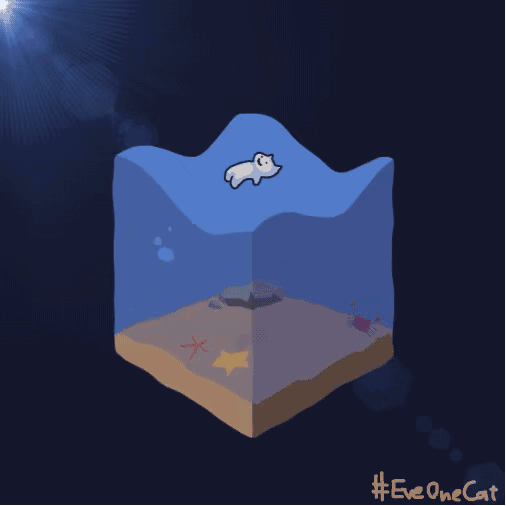

不知道从哪里听来得话: 人生该走的弯路一步也少不了. 回头仔细想想,确实如此. 虽然我现在已然走在自己还算热爱的道路上. 但是压力却是越来越大,不光来自工作. 更多的来自家庭. 家家有本难念的经. 我家这一本,却是特别难念. 有的时候,我真的挺羡慕我的学生们的. 家里给与的期望并不高,反而给了他们足够的自由与空间. 只要他们能够认识到自己的缺点与优点,便能够走的很远. 毕竟这个年代,文凭的价值对于体制外的他们来说,并不是特别重要. 哎,又开始想往外飞了,几十岁的人了,要稳重┗( ▔, ▔ )┛